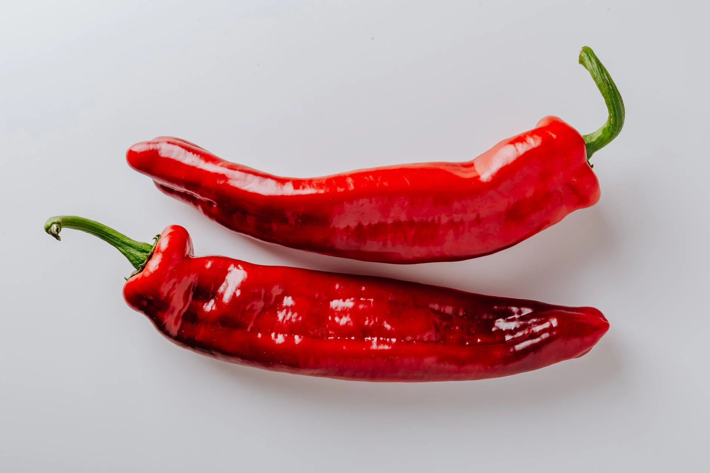

macarrão com molho de amendoim apimentado
descrição
inspirado no clássico macarrão satay tailandês, esse macarrão ao molho de amendoim apimentado tem um leve toque agridoce.
ingredientes
- 1/2 pacote de macarrão
- 1 cebola
- 3 dentes de alho
- 1 cs gengibre ralado
- 1 pimenta dedo de moça
- 1 pimentão vermelho
- 1 cs pasta de amendoim
- 1 cs melado
- sal a gosto
- óleo de coco
- cebolinha picada
- gergelim torrado
modo de preparo
- coloque pelo menos 3L de água para ferver, quando a água ferver, adicione sal em generosidade e o macarrão. quando o macarrão cozinhar, escorra e faça o choque térmico com água fria.
- corte a cebola e o alho em cubinhos pequenos
- frite a cebola no óleo de coco com um pouco de sal até ficar transparente, adicione o alho e frite até ficar dourado
- abaixe o fogo, adicione o gengibre e a pimenta, misture e logo adicione um pouco de água para deglacear
- misture, em uma tigela separada, a pasta de amendoim, o melado e uma concha da água de cozimento do macarrão
- adicione o pimentão, deixe amolecer levemente e acrescente a misturinha
- misture o macarrão cozido ao molho e cozinhe levemente até que esquente novamente o macarrão
- sirva com cebolinha e gergelim torrado